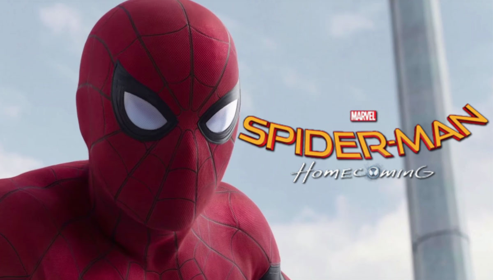
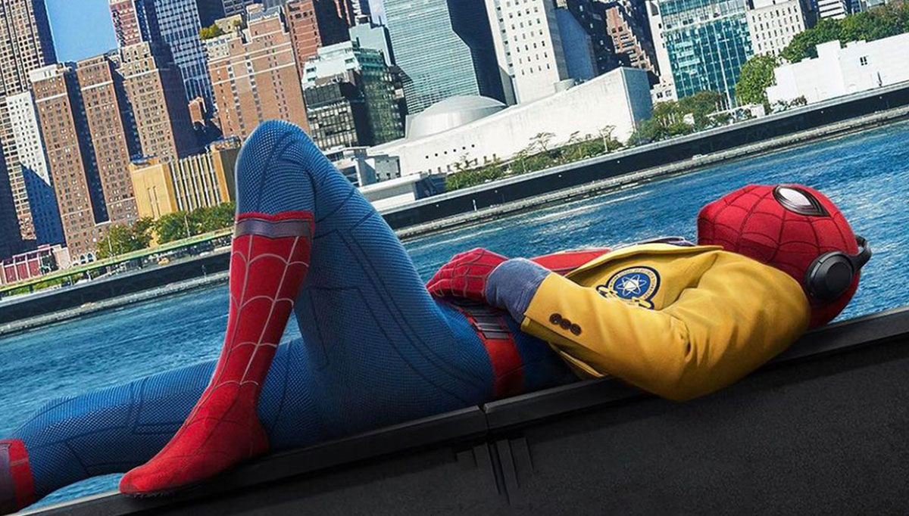
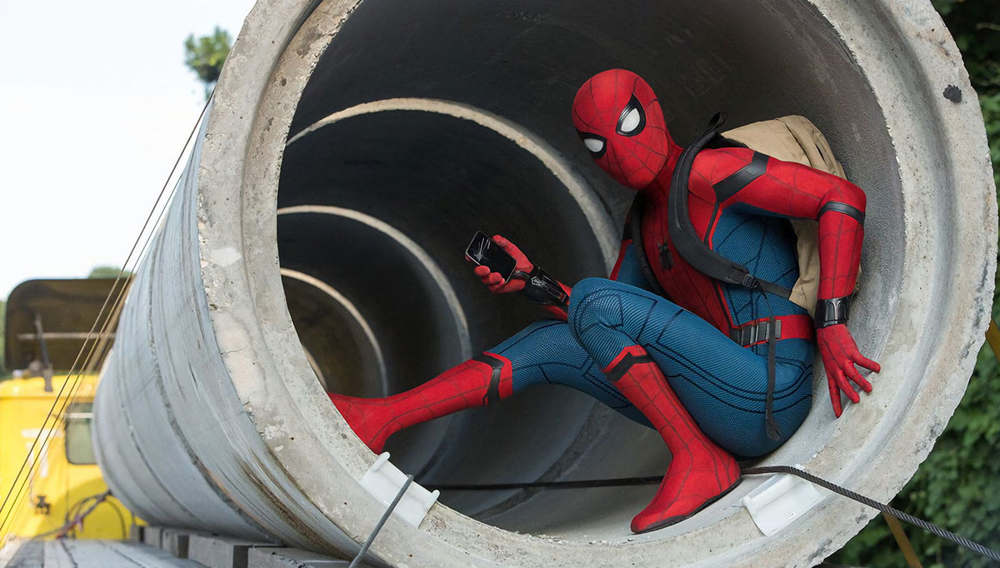
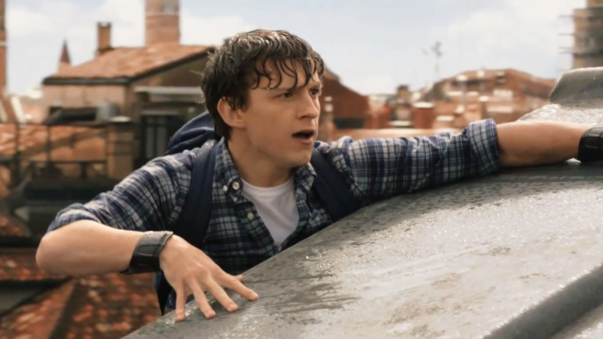
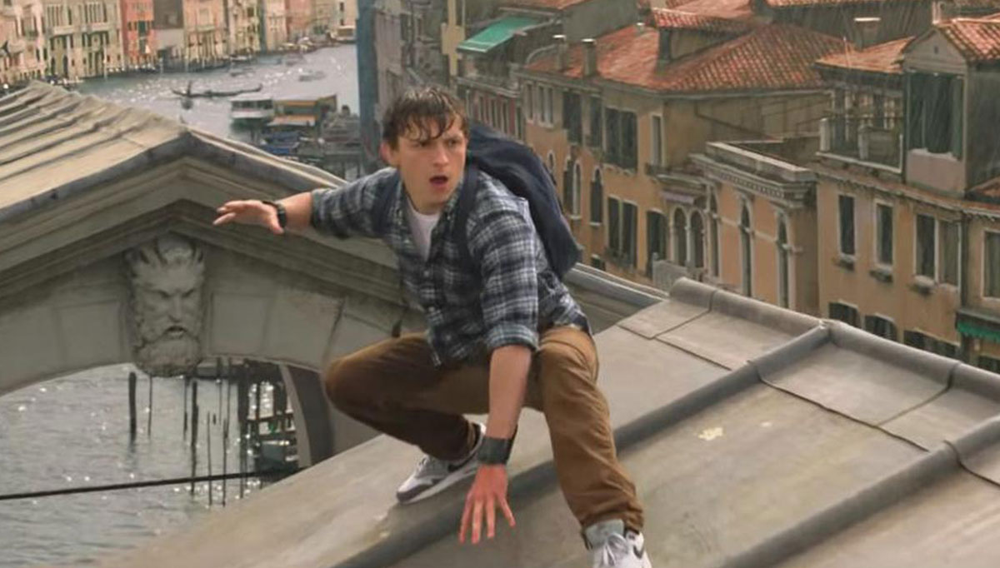

comes great responsibility.
Freindly
Neighborhood
SpiderMan
With great powercomes
great responsibility.
HOME COMMING & FAR FROM HOME
Spider-Man
: Homecoming
Spider-Man
: Far From Home
SPIDER MAN
: HOMECOMING’S SYNOPSIS
Marvel Heroes' Generation Change!
"Do you take tests to be Avengers?"
He was picked by Tony Stark (Robert Downey Jr.) at the time of the Civil War. Spider-Man Peter Parker (Tom Holland). Tony Stark, who presented him with a new suit, advises him not to do anything dangerous. But Peter Parker, who's full of pretense and justice, I'm trying to confront a powerful enemy that threatens the world, Michael Keaton.
Spider-Man Can't Be Avengers Yet.
Spider-Man Wants to Save the World More Than Homework. Will he ever be reborn as a true hero!
SPIDER MAN
: FAR FROM HOME’S SYNOPSIS
Everything begins again!
The world has changed since the Endgame.
Spider-Man Peter Parker will travel to Europe with his school friends.
And Nick Fury appeared in front of him asking for help.
With the addition of an unidentified helper, Mysteria,
The new villain, Elimental Creatures, who threatens the whole world.
You're in a situation where you have to face...
TOM HOLLAND
Thomas Stanley Holland is an actor in England. Holland began his professional acting career as Billy Elliot / Michael in the musical Billy Elliot, which was performed at the West End Theater in London. In 2012, he was nominated for the Creek Choice Film Award, Saturn Award for his delicate acting despite his young age, won the National Critics' Committee, the Empire Award for Best New Actor, the Young Artist Award, the London Film Critics' Association Award, and the British Children's Performance of the Year Award. He rose to stardom playing the role of Peter Parker / Spider-Man of Marvel Cinematic Universe.
JAKE
GYLLENHAAL
Jake Gyllenhaal is an American actor. He is the son of movie director Steven Gillen Hall and screenwriter Naomi Ponner Gillen Hall. He made his screen debut with "Goodbye New York Good Morning My Love" (1991), and began his acting career with films "Dangerous Woman" (1993) and "Homeground," directed by his father Stephen Gillan Hall. He began to draw attention as Homer Hickam Jr. in the film "Oktover Sky" (1999), and was nominated for Best Actor at the Independent Spirit Awards for his chaotic teenage role in the indie cult film "Donny Daco" (2001), and also played brother and sister in the play with his sister, Maggie Gyllenhaal.
SAMUEL L. JACkSON
Samuel Leroy Jackson is an American actor and producer. Widely regarded as one of the most popular actors of his generation, the films in which he has appeared have collectively grossed over $27 billion worldwide, making him the highest-grossing actor of all time (when cameo appearances are excluded). He rose to fame with films such as Goodfellas (1990), Jungle Fever (1991), Patriot Games (1992), Amos & Andrew (1993), True Romance (1993), and Jurassic Park (1993), and has especially been noted for his roles in the Quentin Tarantino films Pulp Fiction (1994), Jackie Brown (1997), Django Unchained (2012), and The Hateful Eight (2015). For his role in Pulp Fiction, he was nominated for the Academy Award for Best Supporting Actor.
ZENDAYA COLEMAN
Zendaya Maree Stoermer Coleman known mononymously as Zendaya, is an American actress and singer. She began her career as a child model and backup dancer, before gaining prominence for her role as Rocky Blue on the Disney Channel sitcom Shake It Up(2010–2013). In 2013, Zendaya was a contestant on the sixteenth season of the competition series Dancing with the Stars. From 2015 to 2018, she produced and starred as K.C. Cooper in the sitcom K.C. Undercover, and in 2019, she began playing the lead role in the HBO drama series Euphoria. Her film roles include supporting parts in the musical drama The Greatest Showman(2017) and the superhero films Spider-Man: Homecoming(2017) and Spider-Man: Far from Home (2019).
TRAILER
LIST VIEW
-
HOME
COMING 1  -
HOME
COMING 2  -
HOME
COMING 3  -
FAR FROM
HOME 1  -
FAR FROM
HOME 2  -
HOME
COMING 1 -
HOME
COMING 2 -
HOME
COMING 3 -
FAR FROM
HOME 1 -
FAR FROM
HOME 2
Check out the FIRST trailer for reboot of the Spider-Man franchise starring Robert Downey Jr., Marisa Tomei and Tom Holland! Be sure to be the first to check out more trailers and movie teasers/clips dropping soon @MovieclipsTrailers.
A young Peter Parker/Spider-Man (Tom Holland), who made his sensational debut in Captain America: Civil War, begins to navigate his newfound identity as the web-slinging super hero in Spider-Man: Homecoming. Thrilled by his experience with the Avengers, Peter returns home, where he lives with his Aunt May (Marisa Tomei), under the watchful eye of his new mentor Tony Stark (Robert Downey, Jr.).
A young Peter Parker/Spider-Man (Tom Holland), who made his sensational debut in Captain America: Civil War, begins to navigate his newfound identity as the web-slinging super hero in Spider-Man: Homecoming. Thrilled by his experience with the Avengers, Peter returns home, where he lives with his Aunt May (Marisa Tomei), under the watchful eye of his new mentor Tony Stark (Robert Downey, Jr.).
Peter Parker returns in Spider-Man: Far From Home, the next chapter of the Spider-Man: Homecoming series! Our friendly neighborhood Super Hero decides to join his best friends Ned, MJ, and the rest of the gang on a European vacation. However, Peter’s plan to leave super heroics behind for a few weeks are quickly scrapped when he begrudgingly agrees to help Nick Fury uncover the mystery of several elemental creature attacks, creating havoc across the continent!
Peter Parker returns in Spider-Man. Far From Home, the next chapter of the Spider-Man: Homecoming series! Our friendly neighborhood Super Hero decides to join his best friends Ned, MJ, and the rest of the gang on a European vacation. However, Peter's plan to leave super heroics behind for a few weeks are quickly scrapped when he begrudgingly agrees to help Nick Fury uncover the mystery of several elemental creature attacks, creating havoc across the continent!